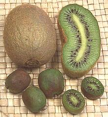
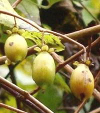

SAFARI
Users
Kiwi Fruit
 [Chinese Gooseberry, Yangtao, Actinidia deliciosa (standard Kiwi) | Actinidia arguta (Kiwi Berry, Hardy Kiwi, Baby Kiwi) | Actinidia chinensis (Golden Kiwi)]Native to northern China, this berry was taken to California in 1904 and New Zealand in 1906. It was originally known as the "Chinese Gooseberry" because of a supposed similarity of flavor to the unrelated Gooseberry. The name "Kiwi" was selected as a marketing name when New Zealand growers started promoting the product ("Chinese" was considered not good during the Cold War).
Kiwi has soft green flesh with a taste that has been described as a mix of strawberry, banana, and pineapple. The seeds are edible and always eaten, but fussy people peel the fuzzy skin. I never bothered - and got the advantage of the skin's high antioxidant content as a bonus.
These fruits became scarce in 2010 to 2012 because a bacterial infection (Pseudomonas syringae pv. actinidiae) devastated crops worldwide in 2010 and 2011. Italy, the leading producer, and New Zealand, second, accounted for 75% of world production and both were hit hard. The crop has recovered, but today (2017) China is the largest producer, producing as many tons as Italy and New Zealand combined, with Chile coming in fourth.
A. deliciosa has been the most common species in the North
America, with the tiny A. arguta gaining a market here as
growers cranked up production (yuppies will pay more for "baby" anything).
The yellow fleshed A. chinensis has never been much available
here. The future of these crops is now in doubt. Shown in the photo at
the top of the page are: (A) A. arguta, (C) A. chinensis,
(D) A. deliciosa, (E) A. eriantha, (P) A. polygama.
Silver Vine
 [Cat Pwder; Matatabi (Japan); Actinidia polygama]
Native to mountainous regions of China and Japan, this plant gets its name from its leaves being partially white, except during flowering when they turn entirely green.
this vine produces edible Kiwi Fruit (P in photo at top of page) but is more well known for driving cats bananas - it's stronger than Catnip. The active part is ground up fruit galls produced from infection with midges. Fruit without galls is pretty much ignored, as are other parts of the plant.
The fruit of this plant is typically around 1-1/2 inches long. It
is often eaten raw with salt, but can be fried, added to rice, mixed
into salad dressing, or made into fruit wine. Leaves, buds and stems
are ground up to make an herbal tea (for people, not cats), and
ground more coarsely for use as bath herbs.
Photo by Aomorikuma distributed under license Creative
Commons
Attribution-ShareAlike 3.0 Unported.